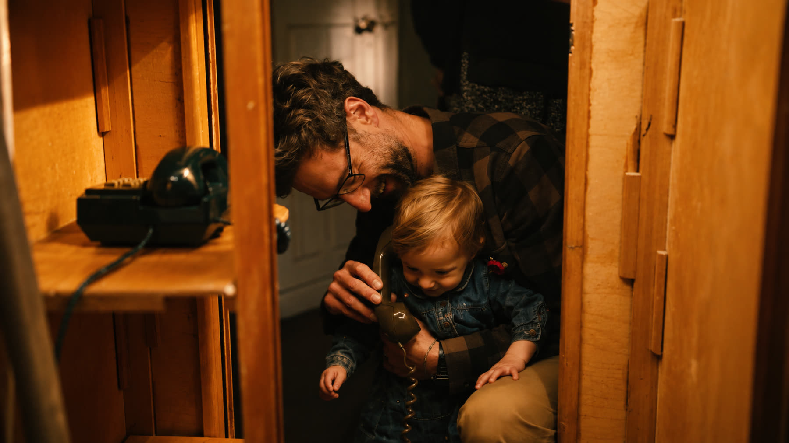
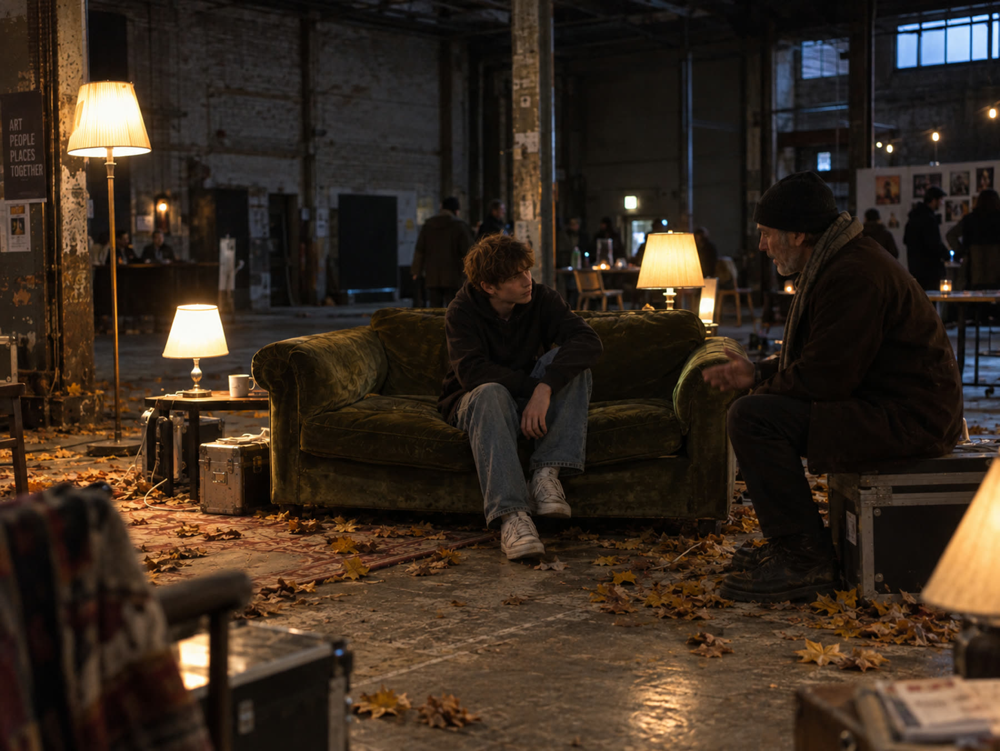

Leave a Memory
Memory Library is built from memories like yours. Visit Boathouse 5, 13-21 November 2026, and share one of your own, however ordinary it might seem.

Recollect by Thomas Buckley and Kate Phillips, commissioned by ArtHouse Jersey

Concept image for Recollect Together
Any memory counts, however small: a place, a person, a feeling, an ordinary afternoon. It doesn't need to be significant, and you don't need to bring anything with you. Your memory is what matters.
Just turn up. Notebooks and tape recorders are there for you at Recollect, a collection of sculptures within the exhibition, so you can share a memory in whatever way feels easiest. Drop in any time Boathouse 5 is open during Memory Library, 13-21 November 2026 - nothing to bring, nothing to prepare.
Most days between 11:00 and 13:00, Recollect Together means someone's on hand if you'd rather talk it through. Outside these hours it's entirely self-directed.
Memories shared this way become part of the physical exhibition and archive at Boathouse 5, not a database on this website.
Can't make it in person?
Contact the Memory Library team via Play Office.